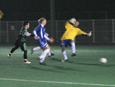
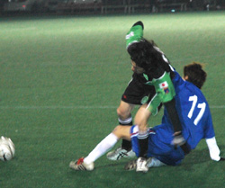
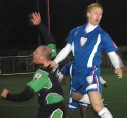
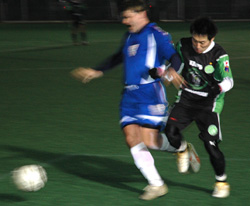
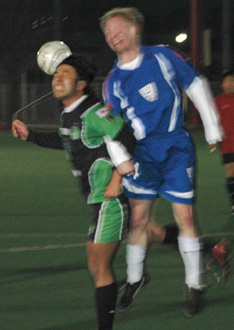

|
Hachioji Park, Sat 20th Jan. A quality opening strike from BFC skipper Jon Day and two breakaway goals late in the game gave BFC a surprisingly comfortable 3-0 victory over champions Hibs on Saturday, sending them top of the TML for the first time.
BFC were tonked 4-1 in the first meeting between the sides this season, turning up at St. Mary's with a bare eleven.
This time around it was Hibs who were missing players, and a full-strength BFC playing on their preferred ground at Hachioji were generally too good in every department for the champions.
Even the loss of goalkeeper 'Beef' Jyrki to a sore knee in the middle of the second half failed to cause alarm, with striker Al Himmer stepping into the keeper's gloves (eh!?).
With the knowledge that a second loss to Hibs would probably end any title hopes, the BFC players pulled out all the stops for this performance.
Jon Best and James Morson flew back early from London and Delhi respectively in order to play, and despite both looking slightly jetlagged were able to marshal a very solid defence.
Al Himmer had gone even further, by purchasing not one but two pairs of Golden Boots for the occasion. Looking for all the world like C3PO in a Yul Brynner bodysuit, Al took Jyrki's Kenny Everett gloves but turned down the offer of the Finn's smelly trousers.
Hibs dangerman Tomo was grinning from ear to ear, sniggering at his former BFC team-mate in anticipation of easy pickings.
With the Hibs arriving late, it was the BFC who got out of the blocks the quicker, with Terry and Taka in central midfield establishing a dominance that they would retain throughout the match.
Twenty minutes in, and following a couple of spurned opportunities, BFC duly opened the scoring with a goal of some quality.
After several passes from the back and through midfield, the ball reached Taka on the edge of the Hibs penalty area.
Cleverly delaying his pass whilst the skipper raced outside him, Taka slipped the ball left where Jon was able to reverse it back across the keeper for a fine finish into the corner.
As has become traditional with BFC however, going ahead only served to provoke concern throughout the team, and the fast but controlled tempo that had been evident became rushed, with too many passes failing to find feet and the final ball usually ending up in the car park.
For the latter part of the first half it was probably Hibs who had the better of the chances, with one clear header from a corner smacking against the post.
BFC continued to make sporadic raids forward, with one memorable lofted pass from Best (memorable only to Best himself? - ed) beating the retreating Hibs backline but also proving just too hot for the skipper to bring down and slot home.
At the other end the heat was rising in the irascible mind of Midget Morson, who talked himself into a booking for protesting at another perceived injustice.
Such petulant outbursts of aggrieved squeaking will have to be reined in if the Jack Russell nickname is not to be dropped in favour of 'The Ginger Whinger'.
At the break BFC were confident they could go on and win, but knew that the next goal would be crucial.
Both teams were cagey after the restart, meaning that there were few clear chances for either side.
Hibs best chance to equalise came 10 minutes after big Jyrki's exit as Tomo raced clear after being somewhat dodgily adjudged onside by a referee who was excellent apart from a puzzling insistence on refusing to allow the linesmen to judge offsides. Cue goal-hanging frenzy!
Like Sheffield United, BFC had chosen not to name a reserve goalkeeper on the bench, and it was the Golden-Booted Dilettante of Dusseldorf who fulfilled the Phil Jagielka role (eh? - ed) and came to the rescue.
With Sid Lloyd whispering sweet nothings and ropey goalkeeping advice in his ear from behind the goal, Al stood large and -- to everyone's amazement -- made an important block, and one that improved each of the 98 times it was susequently described down the pub.
Hibs will be disappointed that just as they were starting to play really well they gave away a second goal after missing a simple clearance.
If ever a defender is to give the ball away when he is the last man, he will hope that he doesn't lose it to Shosuke, one of the quickest players in the league, who duly raced away and danced round the Hibs keeper to make it 2-0.
With Hibs now forced to commit players forward, sweeper Morson made one of his patented headless-chicken sprints out of defence, only to collect a return pass on the halfway line and charge toward the Hibs goal.
Playing a one-two with Jon Day on the edge of the box and with half the BFC team willing him have a nose-bleed and trip over his feet (which is what he generally does), Morson closed his eyes, flailed wildly at the ball, and somehow sent it gently past the floundering keeper.
Cue mass hysteria from Morson and general hanging of heads in despair from the rest of the team.
Having only recently shipped off melon twister Phil Lowes to the penal colony for being top scorer, surely it can't be that we are now going to get another central defender leading the scoring charts?
With a striker picking the team, Morson will not be scoring too many more if he knows what's good for him!
A good win, albeit against a Hibs side missing Bevan's influence and one or two others, but more important, an excellent all round performance for BFC.
As pleasing as the three goals was the clean sheet at the other end, with defenders continuing to make well timed tackles and hold their shape right to the final whistle.
The Hibs will surely bounce back and BFC only lead the Swiss on goal difference but if we can keep up this level of performance and commitment for the rest of the season, there is every chance of finishing with something to really shout about.
Report by Wardrobe
Sorry for poor photo quality (Night shots!!)
|